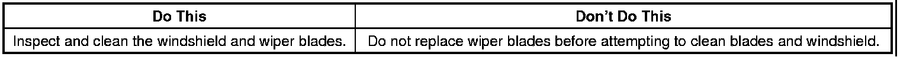
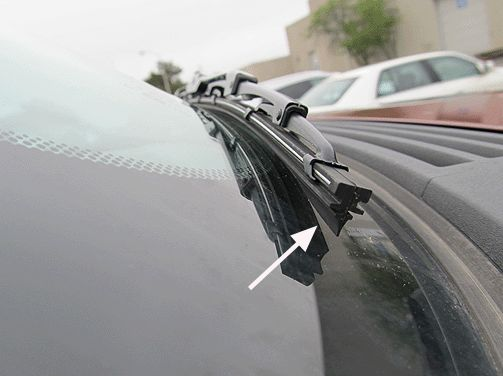
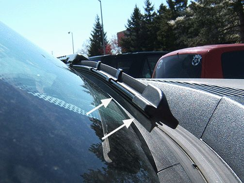
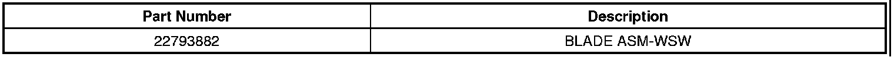
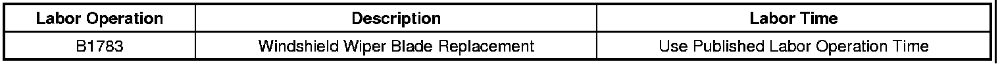

Body/Glass - Windshield Wiper Chatter/Noise/Streaking
TECHNICALBulletin No.: 11-08-43-001
Date: August 01, 2011
Subject: Windshield Wiper Chatter/Noise and/or Streaking (Perform Cleaning, Replace Wiper Blade as Necessary)
Models:
2007-2011 Cadillac Escalade, Escalade ESV, Escalade EXT
2007-2011 Chevrolet Avalanche, Suburban, Tahoe
2007-2011 GMC Yukon, Yukon XL
Avalanche and Escalade EXT Built Prior to March 17, 2011
All Other Utility Models Built Prior to April 4, 2011
Condition
Some customers may comment on windshield wiper chatter/noise, or that the wipers are streaking.
Cause
Most wiper conditions are caused by either contamination or damage. Contamination by bugs, road grime, sap and/or a buildup of vehicle wash/wax treatments may cause wiper streaking. Wipers can be damaged by any of the following:
- Extreme dusty conditions
- Sand and salt
- Heat and sun
- Improper removal of snow and ice
Correction

Note
Additional information on wiper performance, cleaning and maintenance can be found in Corporate Bulletin Number 06-08-43-003C.
Wash the windshield thoroughly and clean the outside of the windshield with glass cleaner. Also clean the rubber wiper blades using a lint free cloth or paper towel soaked with windshield washer fluid or a mild detergent.
Tip
For a larger scale buildup on the windshield, use a non-abrasive cleaner such as Bon-Ami* (www.faultless.com) cleanser with a wet sponge, being sure to use plenty of water to avoid scratching the glass. Flush the surface and body panels completely.
If cleaning does not improve the condition, replace the windshield wiper blades with GM P/N 22793882. The replacement blade is a dual extrusion rubber material for durability performance.
Note
The outboard end of the passenger side wiper tends to sit off the surface of the windshield due to the design of the wiper blade, and the curvature of the glass. This is a normal condition which leaves a "no contact" area at the lower edge of the wipe pattern, and no correction should be attempted.
The Full Size Utilities use a conventional blade design, which has a slightly different interface to the windshield than the flat blade design used on the Pickups. Examples of the two designs and are shown in the graphics below:
Utilities

Pickups

* We believe this source and their products to be reliable. There may be additional manufacturers of such products/materials. General Motors does not endorse, indicate any preference for, or assume any responsibility for the products or material from this firm or for any such items that may be available from other sources.
Parts Information

Warranty Information

For vehicles repaired under warranty, use the table.

Disclaimer